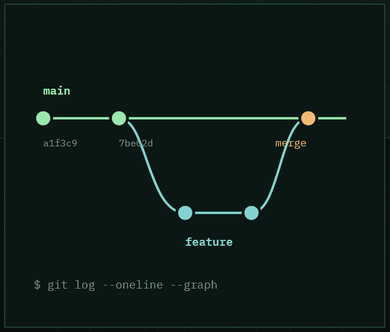

¿Qué es el control de versiones?
Un sistema que guarda el historial de cambios de un archivo o proyecto. Permite ver quién cambió qué y cuándo, y volver a una versión anterior si algo sale mal.
Cómo se guarda el historial de un proyecto: desde el historial de Google Docs hasta Git y GitHub para trabajar en equipo.

Un sistema que guarda el historial de cambios de un archivo o proyecto. Permite ver quién cambió qué y cuándo, y volver a una versión anterior si algo sale mal.

Google Docs guarda versiones de forma automática. Desde el historial puedes comparar ediciones, ver el autor de cada cambio y restaurar una versión anterior.
Git es el sistema de control de versiones que funciona en tu ordenador. GitHub es la plataforma web donde se alojan los repositorios y se colabora con otras personas.
git init crea un repositorio.git add prepara los cambios.git commit guarda una versión.git push / git pull sube y baja cambios.